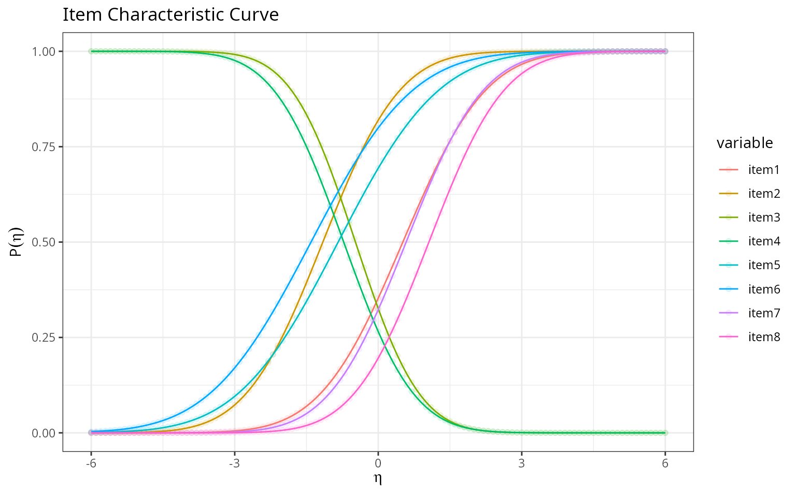
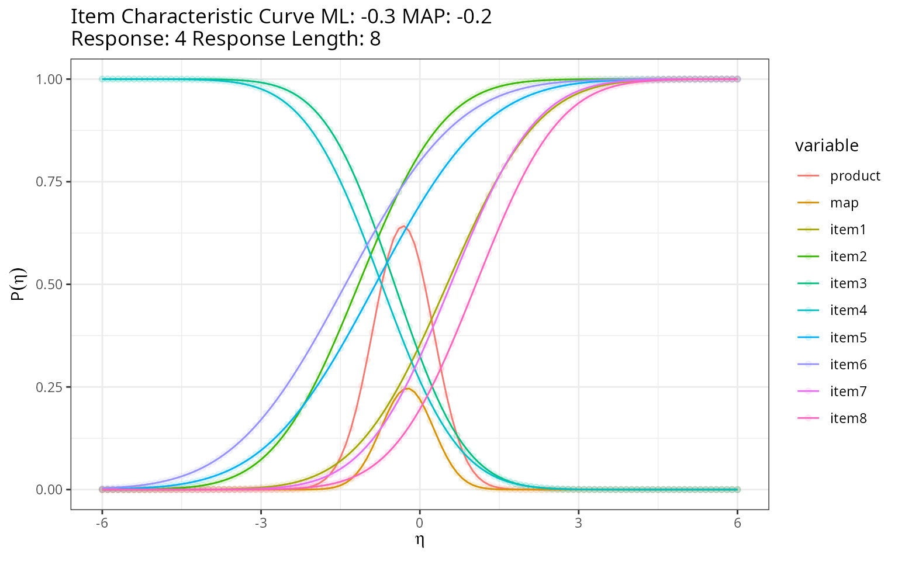

Description
This shows the output of Thurstonian IRT functions from the package
rwf, for forced-choice and ranking questionnaires where respondents rank
or compare items within blocks instead of rating each item
independently. The functions cover the full workflow: building the
comparison design, encoding rank data into the binary
pairwise-comparison format the model needs, a from-scratch
single-dimension item characteristic curve and grid-based ability
estimator, a MAP/Empirical-Bayes-Modal scorer that reproduces
thurstonianIRT::predict() directly from a fitted
lavaan model’s parameters, and a Heywood-case diagnostic
for the lavaan fit.
Installation instructions for rwf can be found here
The code can be found here
Theoretical Background
Why forced-choice items need a different IRT model
In a forced-choice block, a respondent doesn’t rate each item on its own scale (which is vulnerable to response styles like acquiescence or extreme responding) — they rank or compare items against each other within the block. Thurstone’s (1927) law of comparative judgment models each item’s momentary appeal as a latent utility with a normal distribution; comparing two items reduces to comparing which of two normal variables is larger, giving a normal-ogive (probit) response model for each pairwise comparison rather than a single item response curve.
From a block to pairwise comparisons
A block of k items yields \binom{k}{2}=k(k-1)/2 unique pairwise comparisons. Each comparison is coded +1/-1 in a comparison matrix: item i beating item j contributes a row with +1 in column i and -1 in column j. Stacking these rows across all pairs in a block, and stacking blocks block-diagonally across an entire questionnaire, gives the full design (lambda) matrix used to fit the Thurstonian model.
The single-dimension item characteristic curve
For one trait, comparing items with loadings \lambda, thresholds (crossing points) \gamma, and residual variances \psi, the probability that a given pairwise comparison resolves in a particular direction at trait level \eta is a normal-ogive function:
P(\eta) = \Phi\left(\frac{-\gamma+\lambda\eta}{\sqrt{\psi}}\right)
MAP / Empirical Bayes Modal (EBM) scoring
Given a binary response pattern across all pairwise comparisons, the maximum a posteriori trait estimate maximizes the posterior:
\hat{\boldsymbol\eta}_{MAP} = \arg\max_{\boldsymbol\eta} \left[ \sum_i y_i\log P_i(\boldsymbol\eta) + (1-y_i)\log(1-P_i(\boldsymbol\eta)) - \tfrac{1}{2}\boldsymbol\eta^\top\Psi^{-1}\boldsymbol\eta \right]
— a probit likelihood over all observed comparisons, plus a
multivariate normal prior (with covariance \Psi) on the traits. This is the same
likelihood-plus-prior structure as the EAP estimator covered in EXAMPLE_EAP.rmd, except
optimized directly (via BFGS) rather than by grid integration, and
extended to multiple correlated traits at once.
Building a Comparison Design
For one block of items items,
generate_comparisons_matrix builds the \binom{k}{2}\times k matrix of +1/-1
pairwise comparisons:
compute_dummy_comparisons(items = 3)## [1] 3## i1 i2
## 2 1 2
## 3 1 3
## 6 2 3## [,1] [,2] [,3]
## [1,] 1 -1 0
## [2,] 1 0 -1
## [3,] 0 1 -1generate_matrix_lambda_hat stacks this same block
structure vertically across several identical blocks, while
generate_matrix_A builds the full
block-diagonal design across blocks blocks
of items items each — the design matrix for an entire
questionnaire made of independent blocks:
generate_matrix_lambda_hat(blocks = 3, items = 3)## [,1] [,2] [,3]
## [1,] 1 -1 0
## [2,] 1 0 -1
## [3,] 0 1 -1
## [4,] 1 -1 0
## [5,] 1 0 -1
## [6,] 0 1 -1
## [7,] 1 -1 0
## [8,] 1 0 -1
## [9,] 0 1 -1
generate_matrix_A(blocks = 3, items = 3)## [,1] [,2] [,3] [,4] [,5] [,6] [,7] [,8] [,9]
## [1,] 1 -1 0 0 0 0 0 0 0
## [2,] 1 0 -1 0 0 0 0 0 0
## [3,] 0 1 -1 0 0 0 0 0 0
## [4,] 0 0 0 1 -1 0 0 0 0
## [5,] 0 0 0 1 0 -1 0 0 0
## [6,] 0 0 0 0 1 -1 0 0 0
## [7,] 0 0 0 0 0 0 1 -1 0
## [8,] 0 0 0 0 0 0 1 0 -1
## [9,] 0 0 0 0 0 0 0 1 -1increase_index is the small helper underlying both: it
produces the row (or column) index ranges that pick out block i’s slice of a stacked/block-diagonal
matrix.
increase_index(blocks = 3, items = 3)## [,1] [,2] [,3]
## [1,] 1 2 3
## [2,] 4 5 6
## [3,] 7 8 9Encoding Rank Data as Binary Comparisons
Questionnaire data usually arrives as an explicit rank per item, not
as pre-computed pairwise wins/losses. rank_to_binary
converts one block’s ranks into the binary comparison codes the model
needs (by default, higher value = ranked first = “wins” the
comparison):
set.seed(12345)
mydata <- data.frame(
i1 = round(rnorm(10, mean = 2, sd = 1), 2),
i2 = round(rnorm(10, mean = 2, sd = 1), 2),
i3 = round(rnorm(10, mean = 2, sd = 1), 2)
)
rank_to_binary(mydata, items = 3)## i12 i13 i23
## [1,] 1 0 0
## [2,] 0 0 1
## [3,] 0 1 1
## [4,] 0 1 1
## [5,] 1 1 1
## [6,] 0 0 0
## [7,] 1 1 0
## [8,] 1 0 0
## [9,] 0 0 1
## [10,] 0 0 1rank_df_to_binary applies this across an entire
questionnaire made of multiple same-size blocks in one call:
mydata6 <- data.frame(
i1 = rnorm(10, mean = 2, sd = .5), i2 = rnorm(10, mean = 2, sd = .5), i3 = rnorm(10, mean = 2, sd = .5),
i4 = rnorm(10, mean = 2, sd = .5), i5 = rnorm(10, mean = 2, sd = .5), i6 = rnorm(10, mean = 2, sd = .5)
)
rank_df_to_binary(mydata6, items = 3)## i12 i13 i23 i12.1 i13.1 i23.1
## 1 0 1 1 1 0 0
## 2 1 1 0 0 0 0
## 3 1 1 0 1 1 0
## 4 1 1 1 0 0 0
## 5 0 1 1 0 0 1
## 6 0 1 1 0 0 0
## 7 1 0 0 1 1 1
## 8 0 0 0 1 1 0
## 9 1 0 0 1 0 0
## 10 1 1 1 0 0 1name_triplet_pairs generates matching pair labels
("i1i2", "i1i3", "i2i3", …) for
items grouped in consecutive triplets — useful for naming the columns
these binary-encoding functions produce:
## [1] "i1i2" "i1i3" "i2i3" "i4i5" "i4i6" "i5i6"
name_triplet_pairs(4:9)## [1] "i4i5" "i4i6" "i5i6" "i7i8" "i7i9" "i8i9"rank3_to_triplets runs the inverse direction
for a 3-item block: given the three pairwise binary comparisons, it
recovers each item’s rank (1 = best, 3 = worst) within the triplet:
binary3 <- rank_to_binary(mydata[, 1:3], items = 3)
rank3_to_triplets(binary3)## item1 item2 item3
## 1 2 1 3
## 2 1 3 2
## 3 2 3 1
## 4 2 3 1
## 5 3 2 1
## 6 1 2 3
## 7 3 1 2
## 8 2 1 3
## 9 1 3 2
## 10 1 3 2response_dimension and cfa_icc_index handle
a related bookkeeping problem for multidimensional designs:
picking out, from a long vector of all item/comparison parameters across
several traits, just the subset belonging to one trait pair — and
converting item ordering between lavaan’s natural order and
the order Thurstonian scoring expects.
response_dimension(response = 1:18, dimensions = 3, items = c(1, 2))## [1] 1 2 4 5 7 8 10 11 13 14 16 17
cfa_icc_index(nitems = 18, nfactors = 3)$index_vector## [1] 1 7 13 2 8 14 3 9 15 4 10 16 5 11 17 6 12 18Single-Dimension Item Characteristic Curves and Grid Scoring
icc_cfa implements the normal-ogive probability above
for one comparison; compute_icc_thurstonian evaluates it
across a whole vector of comparisons and (optionally) plots the
resulting curves via plot_icc_thurstonian.
gamma <- c(0.556, -1.253, -1.729, 0.618, 0.937, 0.295, -0.672, -1.127, -0.446, 0.632, 1.147, 0.498)
psi <- c(2.172, 1.883, 2.055, 1.869, 2.231, 2.100, 1.762, 1.803, 1.565, 1.892, 1.794, 1.686)
lambda <- c(1.082, 1.082, -1.297, -1.297, 0.802, 0.802, 1.083, 1.083)
gamma_d1 <- gamma[response_dimension(1:12, 3, c(1, 2))]
psi_d1 <- psi[response_dimension(1:12, 3, c(1, 2))]
eta <- seq(-6, 6, by = 0.1)
result_icc <- compute_icc_thurstonian(eta = eta, gamma = gamma_d1, lambda = lambda, psi = psi_d1, plot = TRUE)
result_icc$plot
Each curve is one comparison’s probability of resolving in the
“positive” direction as trait level rises — comparisons with steeper
curves (larger lambda) are more informative about the
trait.
compute_ability scores a single response pattern by
evaluating the likelihood (times a normal prior, via
compute_map) over a grid of eta values and
taking the grid point with maximum posterior density — a direct,
brute-force analogue of the optimization-based MAP scorer described
below, useful for a single dimension and small enough grids.
map_prior <- compute_map(eta = eta, mean = 0, sd = 1)
response_all_wrong <- rep(0, 8)
response_all_right <- rep(1, 8)
response_alternating <- rep(c(1, 0), 4)
r1 <- compute_ability(response_all_wrong, eta, gamma_d1, lambda, psi_d1, map = map_prior, plot = FALSE)
r2 <- compute_ability(response_all_right, eta, gamma_d1, lambda, psi_d1, map = map_prior, plot = FALSE)
r3 <- compute_ability(response_alternating, eta, gamma_d1, lambda, psi_d1, map = map_prior, plot = TRUE)
c(all_wrong = r1$ability_map, all_right = r2$ability_map, alternating = r3$ability_map)## all_wrong all_right alternating
## -0.8 0.4 -0.2As expected, the all-wrong pattern gives the lowest trait estimate,
all-right the highest, and the alternating (mixed) pattern lands near
the middle. compute_scores applies
compute_ability row-by-row across an entire data frame of
response patterns to score every respondent at once.
Modern MAP Scoring From a Fitted lavaan Model
The functions above assume item parameters are supplied directly. In
practice, parameters usually come from fitting a Thurstonian model with
lavaan via the thurstonianIRT package.
extract_tirt_params pulls and aligns the parameter blocks
(Lambda, theta_diag, tau,
nu, Psi) needed for scoring;
score_tirt_pattern/score_tirt then find the
MAP trait estimate by direct BFGS optimization of the posterior
described in the theory section, rather than grid search — scaling to
many traits and many items at once.
data("triplets")
blocks <- set_block(c("i1", "i2", "i3"), traits = c("t1", "t2", "t3"), signs = c(1, 1, 1)) +
set_block(c("i4", "i5", "i6"), traits = c("t1", "t2", "t3"), signs = c(-1, 1, 1)) +
set_block(c("i7", "i8", "i9"), traits = c("t1", "t2", "t3"), signs = c(1, 1, -1)) +
set_block(c("i10", "i11", "i12"), traits = c("t1", "t2", "t3"), signs = c(1, -1, 1))
triplets_long <- make_TIRT_data(data = triplets, blocks = blocks, direction = "larger", format = "pairwise", family = "bernoulli", range = c(0, 1))
fit_tirt <- fit_TIRT_lavaan(triplets_long)
pars <- extract_tirt_params(fit_tirt)
patterns <- as.matrix(triplets)
scores_rwf <- score_tirt(patterns, lambda = pars$lambda, theta_diag = pars$theta_diag, tau = pars$tau, Psi = pars$Psi, nu = NULL)
scores_reference <- predict(fit_tirt)
head(reshape2::recast(scores_reference, formula = id ~ trait, id.var = 1:2))## id trait1 trait2 trait3
## 1 1 0.2995961 -1.20767032 0.1426395
## 2 2 -0.9154698 0.85793811 0.6401725
## 3 3 -0.6305020 1.34407005 0.8769478
## 4 4 -0.9522713 -0.40026605 0.0620571
## 5 5 0.9106010 -0.01306284 -0.1038967
## 6 6 0.5347432 -0.65726252 -1.4962309
head(scores_rwf)## trait1 trait2 trait3
## 1 0.2995840 -1.20767943 0.14262819
## 2 -0.9154895 0.85788563 0.64015686
## 3 -0.6305244 1.34404424 0.87688671
## 4 -0.9523082 -0.40025408 0.06205322
## 5 0.9106711 -0.01303085 -0.10381123
## 6 0.5347021 -0.65723999 -1.49623069score_tirt’s output matches
thurstonianIRT::predict()’s scores closely — confirming the
hand-rolled BFGS optimizer recovers the same MAP estimates as the
reference package, using only the extracted lavaan
parameters.
The linear-algebra helper underneath
score_tirt_pattern needs \Psi^{-1} (the prior precision matrix);
compute_solve is a base-R Gauss-Jordan elimination
implementation used in place of solve():
A <- matrix(c(2, 1, 1, 3), nrow = 2, byrow = TRUE)
b <- c(1, 2)
x_mine <- compute_solve(A, b)
x_base <- solve(A, b)
rbind(mine = x_mine, base = x_base)## [,1] [,2]
## mine 0.2 0.6
## base 0.2 0.6
# matrix inverse when b is omitted
inv_mine <- compute_solve(A)
inv_base <- solve(A)
all.equal(inv_mine, inv_base, check.attributes = FALSE)## [1] TRUEDiagnosing the Underlying lavaan Fit
Because Thurstonian scoring depends entirely on a lavaan
fit’s estimated parameters, a poorly-behaved fit (a “Heywood case” —
negative variances, out-of-range standardized loadings or correlations,
non-convergence) will silently corrupt every downstream score.
check_heywood screens for exactly these problems.
diagnostics <- check_heywood(fit_tirt$fit, verbose = TRUE)##
## === SUMMARY ===
## ✓ No Heywood cases or major issues detected!
diagnostics$has_issues## [1] FALSERun this before trusting any scores produced by
extract_tirt_params/score_tirt — a model with
Heywood cases needs to be re-specified (e.g. simplifying the trait
structure, fixing an offending residual variance) rather than scored
as-is.
Conclusion
GLM_IRT_T.R covers the full Thurstonian IRT pipeline:
constructing a forced-choice block design
(generate_matrix_A and friends), encoding raw rank data
into the binary comparisons the model needs
(rank_to_binary, rank_df_to_binary), a
from-scratch single-dimension item characteristic curve and grid-based
scorer for understanding the model mechanics (icc_cfa,
compute_ability), and a modern multi-trait MAP scorer that
reproduces thurstonianIRT::predict() directly from a fitted
lavaan model’s own parameters
(extract_tirt_params, score_tirt) — with a
Heywood-case check (check_heywood) to catch improper
solutions before they’re scored.
Rendered with R 4.6.1 · thurstonianIRT 0.12.5 · lavaan 0.7.3